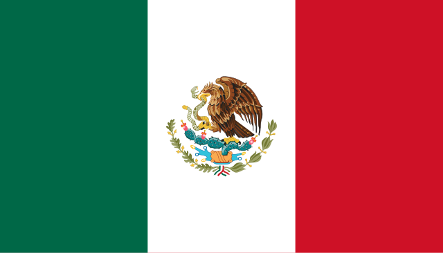

| Cancun |
|||
|---|---|---|---|---|
Quintana Roo |
||||
Mexico |
 | |||
| Population: 888,797 | Lat: 21°10′27″ N | Long: 86°50′47″ O | ||
| Cancun is a stunning destination known for its turquoise waters, pristine white-sand beaches, and vibrant marine life. The area offers a perfect blend of natural beauty and modern amenities, with luxurious resorts, world-class dining, and exciting nightlife. Rich in Mayan culture and surrounded by ancient ruins, Cancun also provides a unique cultural experience. Its tropical climate and breathtaking scenery make it an ideal getaway for relaxation and adventure. | ||||
 | Mount Fuji |
|||
|---|---|---|---|---|
Honshu island |
||||
Japan |
 |
|||
| High: 3776m | Lat: 35.16667 N | Long: 138.68333 E | ||
| Mount Fuji is an iconic symbol of Japan, revered for its majestic beauty and perfect cone shape. Rising 3,776 meters, it offers stunning views and is surrounded by serene lakes and lush forests. A UNESCO World Heritage site, it attracts climbers, nature lovers, and photographers. In every season, from snow-capped peaks to cherry blossoms in spring, Mount Fuji’s breathtaking scenery embodies the harmony of nature and culture, making it a must-see destination. | ||||
 | Great Barrier Reef |
|||
|---|---|---|---|---|
Queensland |
||||
Australia |
 |
|||
| Area: 348,700 km² | Lat: -18.156290 | Long: 147.485962 | ||
| The Great Barrier Reef is a natural wonder and the world's largest coral reef system. Spanning over 2,300 kilometers, it is home to diverse marine life, including vibrant corals, colorful fish, and majestic sea turtles. Its crystal-clear waters make it a paradise for snorkeling and diving. The reef’s breathtaking beauty and ecological significance attract nature enthusiasts and adventurers, offering a unique glimpse into an underwater world unlike any other on Earth. | ||||
 | New York |
|||
|---|---|---|---|---|
New York |
||||
USA |
 |
|||
| Population: 8,336,000 | Lat: 40.71427 | Long: -74.00597 | ||
| New York City is a vibrant metropolis known for its iconic skyline, diverse culture, and endless energy. From the Statue of Liberty and Times Square to Central Park and Broadway, it offers world-famous landmarks and attractions. The city is a global hub for art, fashion, finance, and cuisine, with something for everyone. Its dynamic neighborhoods, rich history, and 24/7 lifestyle make New York a captivating destination that never sleeps. | ||||
Berlin |
||||
|---|---|---|---|---|
Berlin |
||||
Germany |
 |
|||
| Population: 3,645,000 | Lat: 52º 31' 12" N | Long: 13º 24' 36" E | ||
| Berlin is a city rich in history, culture, and creativity. Known for its vibrant arts scene, diverse architecture, and historic landmarks like the Brandenburg Gate and the Berlin Wall, it offers a unique blend of old and new. Berlin is a hub for innovation, nightlife, and multicultural experiences. Its museums, galleries, and street art reflect a dynamic spirit, making it a compelling destination for those seeking history, culture, and modernity. | ||||